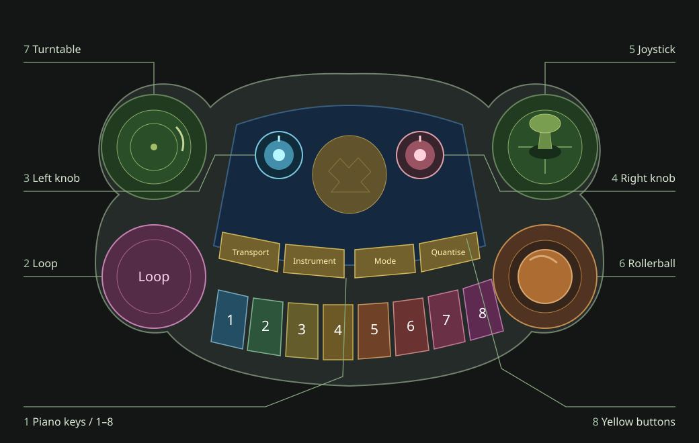
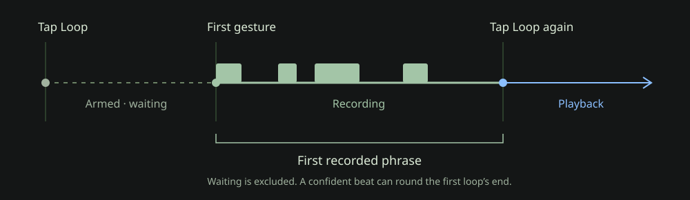

Instrument manual
Controls and operation for EGC1. Updated 12 November 2026.
First loop
The first recording sets the base loop length.
- Power on.
Connect the instrument to your audio setup, turn the listening level down, and power it on. Wait for the piano-key progress display to fill and the blue knob lights to return to their playing colours. Startup waits for the sound engine and sample banks to report ready. Then bring up the listening level.
- Select the first drum channel.
Hold Instrument, tap piano 1, then release Instrument. The selected channel’s key flashes. In Play mode, the eight piano keys now play drum sounds.
- Arm the recording.
Tap the big purple Loop button. Recording starts with the first note.
- Record a phrase.
Play a rhythm. Tap Loop again exactly where the phrase should repeat. This finishes the take and starts playback. The first note sets the start; with a confident beat reference, the end rounds to a whole 4/4 bar. Otherwise your button timing sets the length.
- Record another channel.
Hold Instrument and tap 6 for a sampled synth. Release Instrument, tap Loop to arm, play along, and tap Loop to keep the take.
- Stop or restart playback.
Click the Left knob to stop. Click it again to restart from the beginning. Turn it to balance the selected instrument’s level.
There is no count-in. Press Loop where the phrase should repeat. A recognised beat can round the first loop’s end without moving your played attacks; sparse or ambiguous phrases keep their performed length.
Controls
Read the panel with the piano keys along the bottom. The four yellow buttons run Transport → Instrument → Mode → Quantise from left to right. In this guide, “hold + tap” means keep the first control held while pressing the second.


- 1. Piano keys
- Play notes in Play mode; switch channels on and off in Channel mode. With a modifier held, select an instrument, loop length, or quantisation grid.
- 2. Purple Loop button
- Arm a note recording and finish a take. Also works with Transport for undo/redo, Instrument for audio sampling, and Quantise for loop-cut editing. Holding it clears material; see clearing.
- 3. Left knob
- Turn for selected-channel volume; click for stop/start. Hold Transport while turning for global tempo. Hold Instrument while turning for the selected melodic channel’s octave.
- 4. Right knob
- Turn to set the selected effect amount. Click to alternate between the two parameters in a joystick direction. Hold Transport while turning to change the shared melodic root. With a sampler key held, turn for that key’s level.
- 5. Green joystick · upper right
- Hold a direction to engage its effects. Use the right knob or piano keys to adjust them. Return to centre to restore the resting values, unless you have latched them.
- 6. Orange rollerball · lower right
- Press for a master backspin on the recent mix, returning to live audio at the next bar. See performance.
- 7. Green turntable · upper left
- Its switch resets the session. Modifier combinations give it more selective reset and note-off actions. Treat an unmodified press as destructive.
- 8. Yellow buttons
- Transport, Instrument, and Quantise modify other controls while held. Mode switches between playing notes and switching channels.
Knob indicators
| Colour | Transport state |
|---|---|
| Blue | Stopped |
| Red | Recording notes |
| Green | Playing |
| Magenta on both knobs | Instrument modifier held: sound browsing, subcategories and octave controls |
The right knob identifies the selected FX slot: dim when selected, bright while engaged, and gently pulsing when Hold retains an applied setting. Brightness shows activity, rather than the numeric value. A held sampler key makes it bright cyan for note-level editing. With Transport held, sampler knobs show library status; recent tempo/root turns briefly show bright cyan. The purple Loop button is steady when overdub is armed and slowly breathes when overwrite is armed. It also gives loop-count feedback. Key LEDs show notes in Play mode and enabled channels in Channel mode.
Instrument channels
Hold Instrument + tap piano 1–8 to select a channel. Selection changes which instrument the keyboard and knobs control. Changing channel during an unfinished note/FX take finishes and keeps that take before switching.
| Key | Instrument | How it plays |
|---|---|---|
| 1 · 2 | Drums 1 · 2 | Eight drum pads. |
| 3 · 4 · 5 | Loops 1 · 2 · 3 | Eight positions in a source bar, or content starts in the Vocal phrases subcategory. |
| 6 · 7 | Sampled synths 1 · 2 | Pitched samples across the selected eight-key layout. |
| 8 | 303 synth | Acid-style synthesis, with its own instrument-effects map. |
Browse sounds and subcategories
Hold Instrument and click the Left knob for the previous sound or the Right knob for the next. Release musical keys first to browse the whole bank. Sounds are ordered randomly within their priority groups at startup; the order then stays stable while browsing.
Hold Instrument and move the joystick to choose the selected sampler’s subcategory:
| Direction | Drums | Loops | Synth |
|---|---|---|---|
| Left | Hits | Drum loops | Bass |
| Up | Extracted kits | Melodic loops | Lead, keys and short vocals |
| Right | Percussion | Vocal phrases | Pads |
| Down | Recorded | Recorded | Recorded |
Each sampler keeps its own subcategory and selection. Favourite sounds rank before unchecked sounds. From a neutral selection, browse forward into favourites or backward into unchecked choices. Sounds marked Needs attention are skipped in either direction, including favourites. Marking the current sound leaves it playing until you browse.
Favourite or flag a sound
Hold Transport and click the Left knob to toggle Needs attention, or the Right knob to toggle Favourite. Marks apply to the base sample or kit, including when individual keys have replacement sounds. They are saved with the source library.
With Transport held, left red means attention and right green means favourite. Dim blue means ready and unmarked, bright blue means loading or unavailable feedback, and blank means an empty bank. A mark press flashes white, then orange while its save is pending. The confirmed state remains visible briefly after Transport release; magenta means saving failed or was not confirmed.
Edit one held key
Hold a musical key on a sampler channel. With no modifier, turn the Right knob for that key’s level, or click the Left/Right knob for its previous/next sound. The replacement auditions when ready. On a sampled synth, hold Instrument and turn the Left knob to offset that key by up to four octaves down or up.
If several musical keys are held, the latest press is the target; releasing it returns to the next held key. Sequenced notes and FX keys do not choose edit targets. The left knob still controls channel volume without a modifier. Per-key level changes also affect already sounding and sequenced notes.
Key assignments are independent on each sampler channel. Synth layout/root changes preserve them. Whole-bank browsing, subcategory changes and new captures replace split sound assignments while retaining key levels and octave offsets. Channel reset restores levels and offsets while retaining sound choices. These edits live in memory and are outside recording and undo.
Two keyboard modes. Tap Mode for Channel mode: keys toggle channels and the joystick uses instrument effects. Tap again for Play mode: keys play notes and the joystick uses mix effects. While the joystick engages an FX, piano keys set its value in either mode.
Turning off a drum, sampled-synth or 303 channel stops its sequenced notes. Loop channels mute their audio output while the pattern continues underneath. Channel on/off preserves recorded material.
Recording notes and movements
One take can contain notes, joystick effects and channel-octave changes. Audio sampling is a separate recording.
Start and finish a take
Tap Loop to arm. The first note or audible FX/octave gesture starts capture; waiting while armed does not replace material. Tap Loop again to keep the take and return to playback. A later press while still waiting cancels arming.
The first take establishes the base loop. Its length runs from the first recorded gesture to your finish press. When a confident sample beat or played pulse is available, the ending rounds to a whole 4/4 bar while preserving attack timing. Otherwise it keeps the performed length.
When you finish while holding a key, its live note ends at the button press. Release and press it again to play another live note.

Overdub or overwrite
One tap arms overdub on every channel: add new notes to the saved pattern. The Loop light stays steady while armed. Double-tap Loop within 300 ms to choose overwrite for this take: its armed light slowly breathes. If playing has already started between the taps, the second selects overwrite without finishing; two flashes confirm it. The next take returns to overdub.
Overwrite replaces only the region you record, including rests, and preserves material outside it. Stored notes on that channel stop playing once you play the first new note, then return when the take ends. Other channels keep playing. A take containing only FX or octave movement keeps the old notes and their playback.
Record FX and octave movement
Arm Loop, perform with the joystick, right knob or FX keys, then press Loop to keep the movement. Engagement, value changes and release back to bypass/Hold are captured. Hold Instrument and turn the Left knob without a held sampler key to record the selected melodic channel’s octave.
Each touched parameter replaces its previous movement from first touch to take finish. Untouched parameters and earlier movement outside that interval survive. Both members of a continuous FX pair engage and record together; repeat/reverse and 303 Accent/Slide remain independent. Live edits take over immediately and return to recorded movement when the gesture ends.
Global tempo, tonic and layout, transport length, channel on/off, sound browsing, sample flags, per-key edits and audio capture are outside automation and undo.
Long takes and the rolling window
Once a base loop exists, capture retains up to the current transport length. If you keep playing beyond that, older capture falls out of the window. At a whole transport-length boundary from the take’s first note, recording can freeze when all keys are released. The phrase waits for Loop rather than being erased by more silence. Playing again resumes capture and includes the elapsed silent gap. Held keys prevent freezing; recorded note lengths are limited to one loop.
Finish before stopping or changing transport length: either discards unfinished capture. A length change re-arms at the new length. Changing the selected channel instead keeps the take before switching.
Undo and redo
Hold Transport and tap then release Loop to undo on the selected channel. Hold Transport + Loop past the long-press threshold (about half a second) to redo. One flash confirms undo, two confirm redo, and three mean no available action or insufficient storage.
Undo first cancels an unfinished take; otherwise it restores the preceding committed edit. Notes and FX recorded in one take undo together. A new recorded edit clears redo on that channel. Clearing a channel is undoable, including the final channel; explicit whole-session reset removes all history. History shares limited storage, so dense performances can retain fewer previous edits.
Repeated groups of three short Loop-light pulses indicate recording capacity trouble. If capture fills, a partial take freezes: later playing remains live but is not added. Loop keeps the retained take if it fits; Transport + Loop cancels it. If the saved pattern cannot fit a commit, the old music is preserved and the unfinished take remains available to cancel.
Loop length, tempo & quantise
Extend the transport
After the first loop, hold Transport and tap a piano key to choose a multiple of that base loop. Shorter recorded parts keep repeating.
Before a base loop exists, length selection has no effect. Resizing preserves saved notes and movement: shortening repeats a prefix, and growing can expose the hidden material again. It cannot recover a discarded unfinished take.
Tempo
Hold Transport and turn the Left knob for global tempo, from half speed to almost double. The neutral value uses the original recording’s pace. Loop-sample playback follows timing and can change speed and pitch with tempo.
Independent note and FX grids
Hold Quantise and tap a piano key for the selected channel’s note grid. To set its FX/octave grid, hold Quantise, tap Mode, then press a key. This Mode tap changes the quantise target without changing keyboard mode. Release Quantise to return to note-grid selection. Both grids start Off.
| Key | Grid for notes or FX |
|---|---|
| 1 | Quarter-note triplets |
| 2 | Eighth-note triplets |
| 3 | Eighth-note shuffle, 2:1 |
| 4 | Sixteenth-note shuffle, 2:1 |
| 5 | Eighth notes |
| 6 | Sixteenth notes |
| 7 | Thirty-second notes |
| 8 | Off: performed timing |
Shuffle delays each offbeat to two-thirds of its pair. Note quantisation snaps attacks to the nearest grid position; loop channels also quantise releases. FX quantisation samples recorded movement at each boundary and holds it until the next, creating rhythmic steps. Very short gestures between boundaries may disappear on a coarse grid. Off restores original timing and smooth movement. Live FX stay immediate.
Loop and vocal cuts
On channels 3–5 in a loop bank, keys cover one 4/4 bar: 1, 1&, 2, 2&, 3, 3&, 4, 4&. Starts follow nearby detected attacks in the first source bar. A held key continues through following bars and wraps at the source boundary until release. Uncertain metre falls back to a divided source loop.
Hold Quantise, tap and release Loop, then release Quantise to enter cut editing. In Play mode, each key press advances its position to the same eighth in the next source bar and auditions it; release stops the audition. Further presses cycle through the bars. Repeat Quantise + Loop to leave editing. The pattern keeps playing and auditions are not recorded. While editing, Quantise + keys audition cuts rather than choosing the note grid.
Vocal phrases use detected content starts rather than equal beat divisions. Their edit gesture advances to the next content start. Cut choices survive leaving editing but clear on a sound/subcategory change and are never saved to the library.
Sample eighth-note quantisation
This is separate from the two recording grids. It starts on for each loop sampler. Hold Quantise + Loop until the long press, then release to toggle it: one Loop flash means off, two mean on. A long press does not toggle cut-edit mode or clear a take.
With reliable beat analysis, sample quantisation places eighth-note anchors on an even audio grid without stretching the spans. Short spans finish in silence; long spans have a short outgoing fade before the next attack. Turn it off to retain source swing. Changes start on the next note, preserving a held slice. Vocal phrases bypass it; untracked material keeps its original playback.
Sampling audio
Each of the seven sampler channels can capture incoming audio. The 303 on channel 8 cannot.
- Select the destination.
Feed audio to the sound engine’s configured input. Select a drum, loop or sampled-synth channel with Instrument + piano 1–7. An existing transport supplies the capture’s loop timing.
- Start sampling.
Hold Instrument and tap Loop, then release Instrument. Only one capture gesture is active at a time. Changing channel focus leaves capture on its original channel.
- Stop sampling.
Tap Loop alone, or use Instrument + Loop again. Either stops the original capture, even after a channel change. The remainder to the next transport-length multiple is padded with silence, measured from capture start. With no transport length, stopping completes immediately on the next audio block.
- Play the take.
After background preparation, the initiating channel selects it in Recorded. Its existing MIDI loop can trigger the new sample. Other channels keep their selections and can browse to the take independently through their matching Recorded subcategory.
A drum take becomes a kit of up to eight detected hits in source order; unused pads are silent. Loop takes use ordinary loop/chop playback. Synth takes receive root-pitch analysis and use the melodic layout. Recorded banks are shared by type: Drums with Drums, Loops with Loops, and Synth with Synth.
Capture capacity is 60 seconds. With loop timing, recording finishes at the last whole loop that fits, or at capacity if one transport is longer than the buffer. Existing notes and sample playback are not muted during capture.
Raw takes are saved in the background as WAVs under the recording library’s Recordings/ folder, with analysis under .egc1/live-recordings/. They can reload without computer preparation. The recording store retains the latest saved take per type; keep an external copy of takes you want to archive. A failed save retains the take in memory and retries, but an unsaved take cannot survive power loss. Captures and their sound selections are outside MIDI undo.
Current sampler loading and playback use the source’s left channel; new recordings are mono. Feed the wanted signal to the configured left input. The toy’s original microphone and speaker do not establish the current host routing.
Joystick & effects
Each direction has two parameters. Hold a direction and turn the Right knob to adjust the selected parameter. Click it to select the other member. Continuous pairs engage together; repeat/reverse and 303 Accent/Slide act independently.
Mode chooses the bank. Play mode uses mix effects (Set B). Channel mode uses sampler or 303 effects (Set A). Tap Mode to switch. These tables describe the instrument; choosing a table here does not control it.
Play mode · Mix effects · Set B
All eight channels.
| Joystick | Parameter | Shifted parameter |
|---|---|---|
| Left | Compressor Amount | Compressor Character |
| Up | Gate threshold | Gate tail/release |
| Right | Dub delay mix | Reverb amount |
| Down | Overdrive drive | Overdrive muffle |
ToyDynamics Amount goes from dry to heavy compression. Character moves from punchy to tight and crushed by changing attack/release. Drive adds distortion and Muffle darkens it. On a host with ToyReverb installed, reverb amount grows from short ambience to a long wash, reducing dry sound at the upper end. Older reverb hosts retain their existing mix response.
Channel mode · Sampler effects · Set A
Channels 1–7. Without an engaged FX, keys toggle channels in this mode.
| Joystick | Parameter | Shifted parameter |
|---|---|---|
| Left | Filter cutoff | Filter modulation |
| Up | Akai pitch | Grain size |
| Right | Playback pitch / speed | Akai time |
| Down | Beat repeat speed | Reverse on/off |
Akai pitch and time use grain processing to change pitch and timing separately; grain size changes the texture. Playback pitch/speed changes both together. Filter cutoff sweeps logarithmically through low-pass, neutral centre and high-pass.
With Repeat selected, Down enables repetition; the knob or keys choose speed. Shifted Down selects Reverse, an on/off control. Binary controls ignore knob amounts and consume FX-key presses without playing notes.
Channel mode · 303 effects · Set A
Channel 8, selected with Instrument + piano 8.
| Joystick | Parameter | Shifted parameter |
|---|---|---|
| Left | Filter cutoff | Resonance |
| Up | Envelope modulation | Decay |
| Right | Waveform | Filter type |
| Down | Accent | Slide on/off |
Accent and Slide are separately enabled. Accent has an adjustable amount; Slide is binary. Use Play mode for the same mix effects as other channels.
Play FX with the piano keys
While the joystick engages an effect, piano keys set its selected value in both keyboard modes. Modifiers retain their shortcuts. Keys 1–8 run from low to high; the latest key or knob edit wins. Releasing a key leaves the value selected until joystick release. One key LED shows the current setting or nearest step.
| Parameter | Keys 1–8 |
|---|---|
| Smooth controls | Eight steps across the full range: MIDI 0, 18, 36, 54, 73, 91, 109, 127. |
| Sampler repeat speed | 1, 2, 4, 8, 16, 32, 64, 128. |
| Sampler Akai pitch; drum/synth Akai time | 0.1×, 0.2×, 0.5×, 1×, 2×, 4×, 8×, 10×. |
| Loop-channel time and overall rate | ¼×, ⅓×, ½×, ⅔×, 1×, 1½×, 2×, 4×. |
| Sampler filter modulation | Static/no resonance, static/resonant, LFO ⅛×, ¼×, ½×, 1×, 2×, 4×. |
| 303 filter type | LP6, LP18, HP6, HP18, BP12/12, BP18/6, BP12/6, TB303. The knob also reaches the other filter modes. |
Keep an effect with Hold
While holding a direction, adjust it and tap Quantise to retain the current values after joystick release. Continuous pairs Hold together; repeat/reverse and Accent/Slide retain only the selected member. A second Hold press toggles held Repeat or Accent off.
To reset the selected resting value and erase its recorded movement, hold that joystick direction and Quantise, then click the Right knob. At joystick centre, Quantise + right-knob click clears all recorded movement on the selected channel and resets the current FX bank’s resting values. Remembered active amounts remain available for the next gesture.
Right-knob colours
Normal: Left red · Up green · Right blue · Down white. Shifted: Left magenta · Up yellow · Right cyan · Down orange. Dim means selected, bright means engaged, and a gentle pulse means a held setting remains applied. The display describes the selected FX or pair; another FX may still be applied elsewhere.
Notes and scales
Sampled synths and the 303 use a wide eight-key layout. Keys 1, 4, 6 and 8 stay at the root, fifth, upper root and upper fifth. The other keys add colour. Minor ninth is the startup/reset layout.
Hold Transport and move the joystick to select the layout for all melodic channels. The following examples start on C4:
| Direction | Layout | Keys 1–8 |
|---|---|---|
| Left | Minor ninth | C4 D4 E♭4 G4 B♭4 C5 D5 G5 |
| Down | Suspended dub | C4 D4 F4 G4 B♭4 C5 D5 G5 |
| Up | Dorian colour | C4 D4 E♭4 G4 A4 C5 D5 G5 |
| Right | Dark tension | C4 D♭4 G♭4 G4 B♭4 C5 D♭5 G5 |
Hold Transport and turn the Right knob to change the shared root. Hold Instrument and turn the Left knob to change only the selected melodic channel’s octave. If a sampled-synth key is physically held, Instrument + left-knob turn changes its independent octave offset instead. Instrument + right-knob turn is reserved.
Root and layout changes also transpose saved notes by their physical key positions. Returning to the old setting restores their pitches. A physically held key keeps its original sounding pitch until release; sounding recorded notes follow the new setting and keep their ending time. Channel-octave movement can be recorded; shared root and layout changes are not automated or undone.
Drums and loops retain fixed pad/cut assignments and ignore melodic layout, root and octave controls. A sampled chord transposes as a whole; changing layout does not reharmonise it. Startup roots are A♭ (MIDI 56 for sampled synths, MIDI 32 for the 303).
Playback and clearing
Enable or disable channels
Tap Mode for Channel mode. With the joystick centred and modifiers released, piano keys toggle their channels; lit keys show enabled channels. Turn the left knob for the selected channel’s level. Tap Mode again to play notes. A left-knob click stops playback; another restarts from the beginning.
Backspin
Press the Rollerball while transport is running. ToySpinBack pulls the recent master mix backwards and slows it towards a stop, then returns to live audio at the next bar. The instruments and sequencer keep running underneath. Repeated presses while active are ignored; it does nothing while stopped. This requires the matching ToySpinBack host routing.
Clear and reset
| Gesture | Result |
|---|---|
| Hold purple Loop | After about half a second, clear the selected channel’s recorded material. Channel clear is undoable and preserves transport, even for the final channel. |
| Transport + Loop tap / hold | Undo on tap release / redo at the long-press threshold. Undo cancels an unfinished take first. |
| Press green Turntable | Reset the note session, history, transport, mixer, FX and channel defaults. Selected channel and sound choices are preserved; per-key levels and offsets reset. |
| Hold Mode + press Turntable | Clear and restore defaults for channels currently switched off; they stay off. Mode changes when pressed, so check the channel lights before the reset. |
| Hold Instrument + press Turntable | Send All Notes Off to the selected channel without deleting its sequence. Playback can trigger those notes again. |
Loop acts on press, then on hold. Its initial press can arm or finish a take before the long-press clear. Use Transport + Loop to cancel unfinished capture. An unmodified turntable press resets the whole session and removes undo history.
Quick reference
| Control | Action |
|---|---|
| Instrument + piano 1–8 | Select: drums 1–2, loops 3–5, sampled synths 6–7, 303 on 8. |
| Instrument + Left / Right-knob click | Previous / next sampler sound. Release musical keys for whole-bank browsing. |
| Instrument + joystick | Choose sampler subcategory; Down selects Recorded. |
| Hold sampler key + turn Right knob | That physical key’s level. |
| Hold sampler key + Left / Right-knob click | Previous / next sound for that key. |
| Hold synth key + Instrument + turn Left knob | That key’s octave offset. |
| Loop tap / double-tap | Arm overdub / select overwrite within 300 ms. During a take, a normal press finishes. |
| Transport + Loop tap / hold | Undo on release / redo on long press, for the selected channel. |
| Left-knob click / turn | Stop or restart / selected channel volume. |
| Transport + turn Left / Right knob | Global tempo / shared melodic root. |
| Transport + piano 1–8 | Transport length: 1, 2, 4, 8, 16, 32, 64, 128 base loops. |
| Transport + joystick | Layout: Left minor ninth, Down suspended dub, Up Dorian colour, Right dark tension. |
| Transport + Left / Right-knob click | Toggle Needs attention / Favourite on a sampler. |
| Instrument + Loop | Start/stop audio capture on the selected sampler; later channel changes retain its original owner. Loop alone also stops it. |
| Mode | Play + mix effects ↔ Channel on/off + instrument effects. |
| Hold joystick + Right knob / piano keys | Engage an FX and edit its selected value; keys work in either keyboard mode. |
| Right-knob click | Switch parameters in the selected FX pair, outside browse/held-key contexts. |
| Hold joystick, tap Quantise | Hold current effect values after joystick release. |
| Quantise + Right-knob click | At centre: clear channel automation and current-bank resting values. With joystick held: clear the selected parameter and its movement. |
| Quantise + piano 1–8 | Note grid: quarter triplet, eighth triplet, eighth shuffle, sixteenth shuffle, eighth, sixteenth, thirty-second, Off. In cut editing, keys audition cuts instead. |
| Hold Quantise, tap Mode, press piano key | FX/octave grid with the same eight choices. |
| Quantise + Loop tap / hold | Toggle loop/vocal cut editing / toggle sample eighth-note quantisation. |
| Instrument + turn Left knob | Selected melodic channel octave; targets the held key’s offset when a sampler key is held. |
| Rollerball press | Master backspin while playing. |
| Hold Loop / press Turntable | Clear selected recorded material / reset session. See clearing details. |
Troubleshooting
The piano keys change FX values or switch channels.
Centre the joystick, release modifiers and leave cut editing with Quantise + a short Loop press if active. Tap Mode to return from Channel mode to Play mode. Select an instrument with Instrument + a piano key.
Startup never finishes.
The key progress display waits for sound-engine and bank readiness, without a fixed timeout. Check the Pi, sample storage and feedback service. Press Turntable during startup to skip the wait; this skip is consumed and does not reset the session. Skipping does not make unavailable sounds ready.
I can play live, but the loop is silent.
Restart with a left-knob click, enable the channel and check its volume. Finish the take with Loop. A shorter transport may hide saved notes outside its current length.
The entire instrument is silent.
Wait for startup, check audio connections and listening level, enable a channel and raise its volume. Check that the sound engine is running and receiving MIDI. The controller and audio engine are separate parts.
The joystick changes the wrong thing.
Check Mode and right-knob shift: Play uses mix effects, Channel uses instrument effects. Release Instrument and Transport to leave subcategory/layout selection. Quantise + right-knob click at centre resets current-bank resting values and clears the channel’s recorded movement.
The FX disappears when I let go, or it keeps moving afterwards.
Tap Quantise while the direction is held to retain a setting. Without Hold, joystick release returns to bypass or the recorded curve at the current position. A pulsing right knob means its selected setting remains held. FX elsewhere may remain applied even when that slot’s light is dim.
The recording waits, freezes or rejects the take.
Arming waits for a note or audible FX/octave gesture. A later note take can freeze at its length boundary with no keys held; Loop keeps it. Repeated groups of three short Loop-light pulses indicate storage trouble. Loop can keep a retained partial take if it fits; Transport + Loop cancels it without replacing old music.
A sound vanished from browsing, or the bank is empty.
Check the selected subcategory, prepared metadata and USB connection. Needs-attention sounds are hidden, including favourites. All-hidden banks are empty. An uncached sound loads in the background while the old sound remains playable. Magenta after a mark means its save failed or was not confirmed.
My new audio capture is silent or not available yet.
Select a sampler on channels 1–7 and use Instrument + Loop. Check the host’s left input and its routing. After stopping, wait for padding and background preparation, then use Recorded for that sampler type. The 303 cannot capture. An unsaved take is lost on power failure.
A note is stuck.
Hold Instrument and press Turntable for All Notes Off on the selected channel. Release keys before playing again. Stop with a left-knob click if saved playback keeps triggering the note.
Technical notes
ToySequencer reads the controls, records notes and movement, maintains timing and sends MIDI. ToySampler supplies drum, loop, pitched-sample and recorded-audio playback. The 303, channel effects and master ToySpinBack run in the audio host.
Preparing and combining sample libraries
Use the sample preparation tool to prepare audio and its .egc1 metadata together. Bank membership comes from metadata, rather than named DrumPath/LoopPath folders. Keep each prepared pack intact. The updated library-discovery service can combine independently prepared packs in a collection folder or on multiple USB sticks without merging their metadata. It must be installed for automatic USB discovery. A read-only source can play, but cannot save marks or recordings.
Favourite/attention writes go to the selected sound’s source library. New recordings keep one destination for the session; removing that storage retains pending takes in memory until it returns. Sample loading and analysis use the source’s left channel and normalise it; original files remain unchanged. A stereo output duplicates mono sample playback.
Manual version and installed setup
This edition follows the local ToySequencer master and its pinned ToySampler source, checked on 12 November 2026. It includes current channel routing, unified note/FX recording, undo/redo, held-key editing and the fixed-anchor layouts. Older firmware or a host missing the matching plugins, MIDI mappings or feedback services may behave differently. ToyReverb and automatic USB mounting require their host components. This documentation update does not install software or establish the current rig’s readiness.